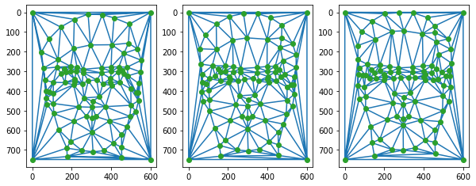
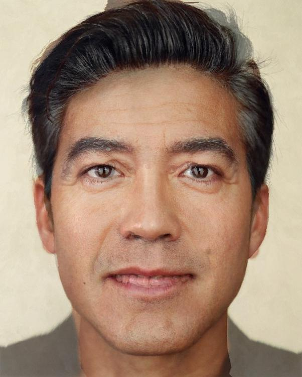
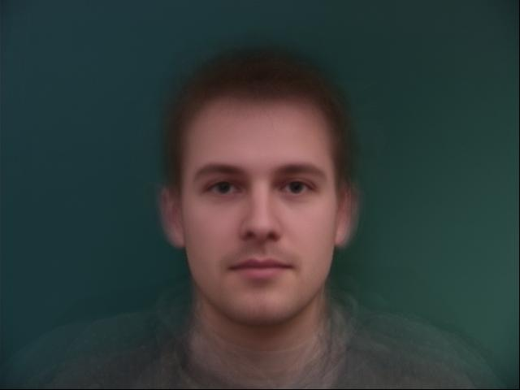
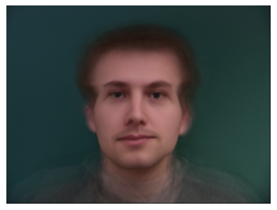
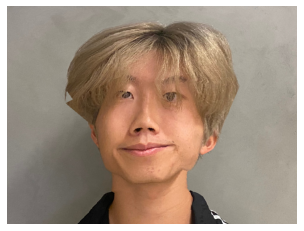

Part 1: Defining Correspondences
For this question, I defined the correspondence points for my 2 images using the tool provided on the project spec. The images I used were my calcentral photo, and a beautiful picture of george clooney. The below picture also shows the triangulations, but only the midway one was computed. The triangulations of im1 and im2 were formed by simply using the corresponding indices of the Delauney function.
 Calcentral Photo
Calcentral Photo
|
 George Clooney
George Clooney
|
|

Correspondence Points and the Delauney Triangulation (only the midway triangulation was computed)
|
Part 2: Computing the "Midway" Face
In this part, I calculated the midway face. This was done by using the triangulations of part 1 to calculate inverse affine transformations between corresponding triangles. Then, we interpolated the colors of the pixels inside each triangle with bilinear interpolation (The results shown are nearest enighbor interpolation because it was much faster).
The images below show the same Calcentral and George Clooney photo, as well as their midway picture.
|
Same Calcentral Photo
|
Same George Clooney Photo
|

Midway Image!
|
Part 3: The Morph Seqeunce
Let's start morphing so we can create an animation! Simply by toggling the values of how much we warp and cross-dissolve, I created the animation below.
Part 4: The "Mean Face" of a Population
In this part, I calculated the mean face of the Danes dataset. Specifically - I only used photos of males that were facing directly forwards and not smiling to try to find what the normal dude looks like.
Additionally, I warped my face (how I look right now) into the average geometry and also warped the average face into the geoemtry of my face.
|

"Mean Face" of the Danes dataset
|
Current Photo of Me
|
|
Warping my Face into the Average Geometry of the Danes Dataset
|

Warping the "Mean Face" into my Face's Geometry
|
Part 5: Caricatures - Extrapolating from the Mean
In this part, I extrapolated my face to the average geometry and got some pretty funny results.
|

My face overextrapolated to the average geomtry.
|
The average geomtry overextrapolated to my face's geoemtry, while maintaining my faces' colors.
|
Bells and Whistles
I created a morphing animation of myself over the years. There is a picture of myself every year from 2014 to 2023, and I created a morph seqeunce for every transition by manually defining their correspondences.
There is no music because of the gif format, but if you want a theme song of my life, here is a link to play as you watch the gif: https://www.youtube.com/watch?v=dQw4w9WgXcQ
 Anthony 2014 to Anthony 2023 :D
Anthony 2014 to Anthony 2023 :D
|